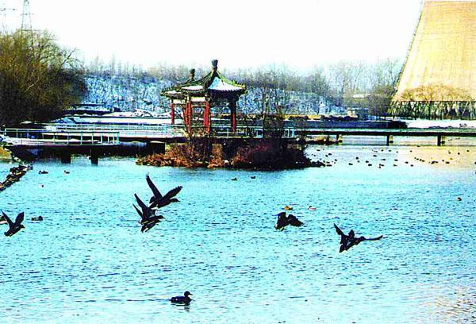

这样的题目当然会让很多人不爽，而不像地球的引力，会让诸如飞机失事的人连表达不爽的机会都没有，资本的引力确实很仁慈，至少在这个资本所构建的现实和虚拟世界中，不爽的表达绝对被允许。当然，在无处逃避的资本引力下，这种表达也就只能都带着些“鸭子”般的气味了。
这个世界不排除有“名鸭子”，但偶尔几只“名鸭子”的被追捧，不可能让所有“鸭子”成为“名鸭子”。哄抬“名鸭子”的价格，让“名鸭子”成为媒体口中的“当红炸子鸭”，只不过为了让众“鸭子”们为了成为“名鸭子”而愈加奋不顾身、前赴后继。
而“名鸭子”的流行口味都不过是口水沸腾的结果，“名鸭子”即使是“好鸭子”也不过就是一“鸭子”，一只可以被人人口水沸腾的“鸭子”而已，这，地球蚂蚁都知道。即使没有前世，即使没有人都曾是蚂蚁的前世，人最大的聪明也不过就是用人的口吻向蚂蚁宣称：人比蚂蚁更人。
在资本的红灯区，搞科研的“鸭子”成群结队，这早有一个专有名词，用“鸭场”一样的文字被写成：VC。至于VC与WC的区别，从味道上是分辨不出来的。当然，这种叫VC的、味道如WC的资本红灯区，在全世界被资本资本了的地方都生意兴隆。
红灯区的天，是资本的天，散着WC的气味，挂着VC的牌子，“鸭子”们的货源充足，而且一日“鸭子”，日日“鸭子”，“鸭子”的子子孙孙永世是孙孙子子的“鸭子”。是呀，只要有着这消费“鸭子”的场所与需求，还怕这世界上没有了“鸭子”？